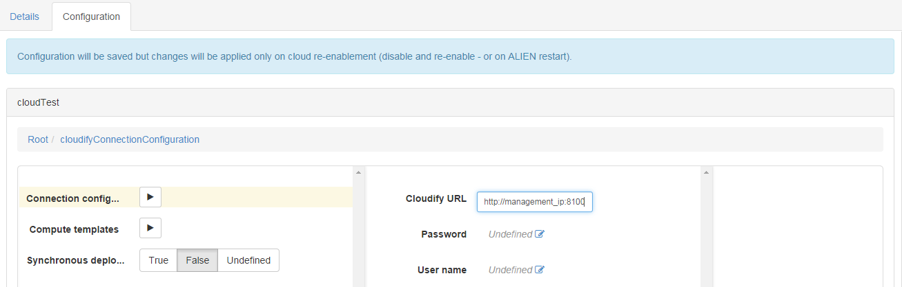
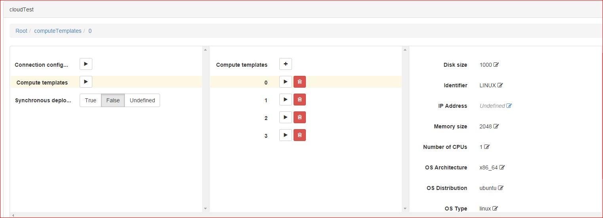

Installing and configuring
Find here how to install and configure the Cloudify 2 driver.
Download
First step of course is to download the plugin.
- last stable version works with the latest stable alien version.
- last build version works with the latest build alien version.
Install
The driver is packaged as an ALIEN plugin, install it in admin > plugins of your running instance of ALIEN.
Configure
You need to create a cloud and configure it.
Creating the cloud
- Login as an admin, and create a cloud:
admin > clouds > New Cloud. - As
PaaS providerfor this cloud, make sure to select Cloudify 2 PaaS Provider from the list. Validate
Configuring the cloud
On the cloud list, select and click on the newly created cloud, then go to the configuration tab.
-
Conection Configuration: Remember the REST API URL you were told to note when bootstraping your cloud with Cloudify, here is the place you’ll need it. Fill the “Cloudify URL” with it, and eventually provide a login (username / password) for the access.
 -
Compute templates: Here you have to configure the computes templates avalaibles in your cloud. Make sure the
Identifiermatch exactly one computes defined in your Cloudify clouds’s computes templates.

{kind=link}
{kind=link}
You can save the configuration, switch back to the Details tab and enable the cloud by clicking on the Enable cloud button.
The cloud can now be used to deploy an application. You might want to know how the driver impacts the TOSCA archives.